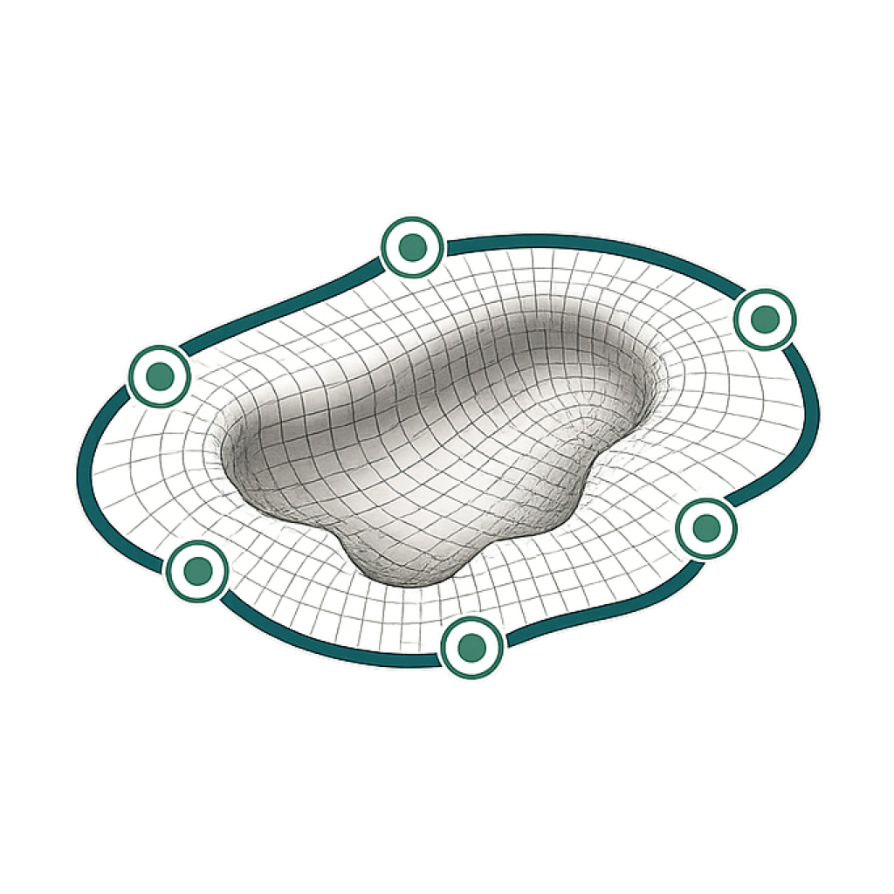

Guided capture
Use LiDAR, TrueDepth, or imported photographs with capture-quality guidance.

OML / 004 · Public release
Wound Vision uses supported iPhone depth sensors and a local Core ML model to record wound geometry, review measurements, and prepare graft-size recommendations.
04A Native iOS patient workspace with local data storage.
Manual wound measurements can be slow and difficult to compare over time. Wound Vision provides one guided workflow for image capture, depth analysis, perimeter review, volume calculation, and documentation.
The application keeps its model and patient records on the device. It does not require an account, analytics service, or remote inference API.
Use LiDAR, TrueDepth, or imported photographs with capture-quality guidance.
Run segmentation and measurement functions on the iPhone with Core ML.
Calculate perimeter, area, depth, volume, and a reference surface from captured data.
Review and adjust the detected perimeter before a result is stored.
Keep capture history and compare measurements across visits.
Create a document for the clinical record after the operator reviews the result.
Source available
Wound Vision is a clinician-assist and documentation tool. It is not a diagnostic device. The repository uses the PolyForm Noncommercial License 1.0.0.
Get Wound Vision ↗